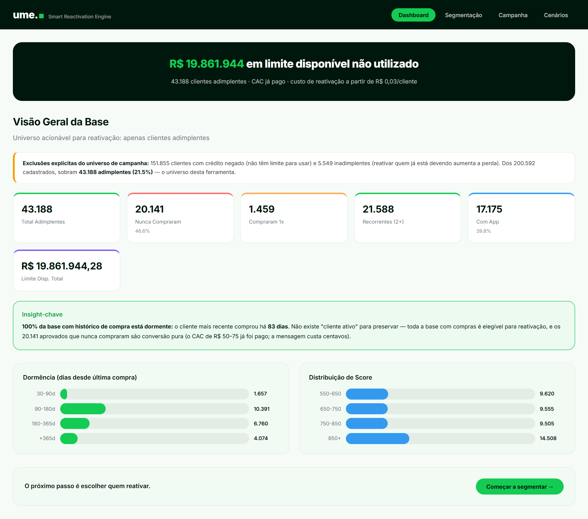
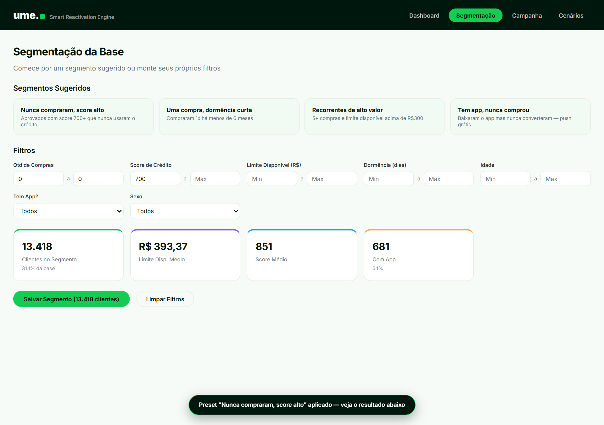
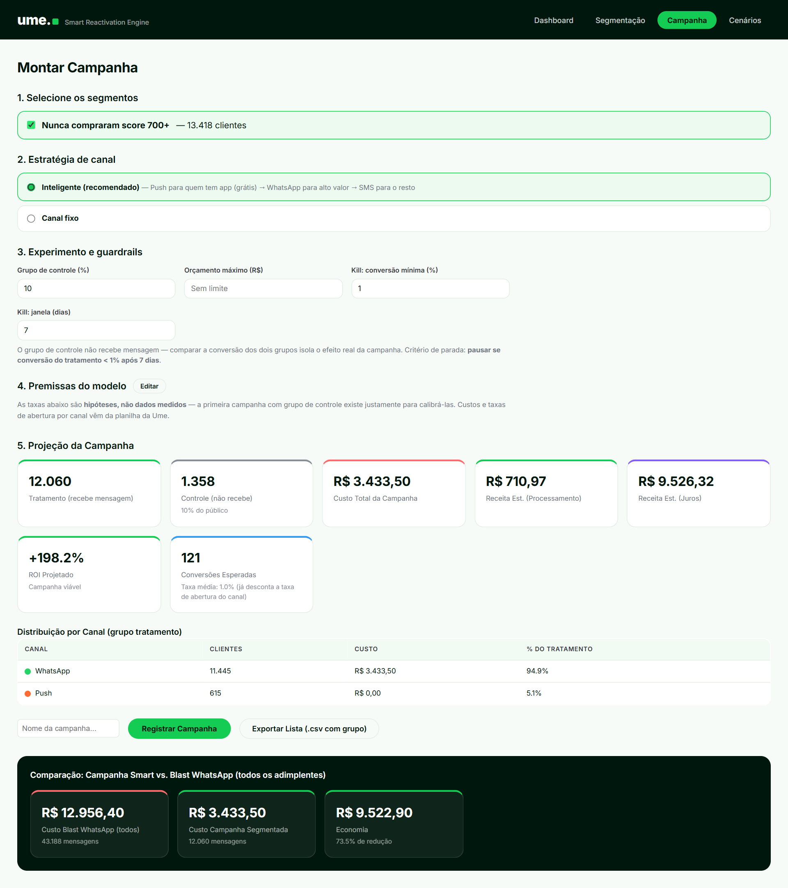
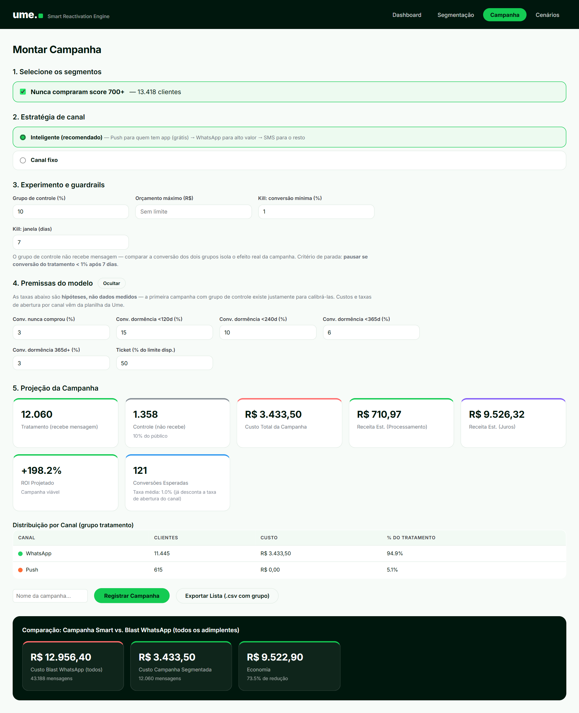
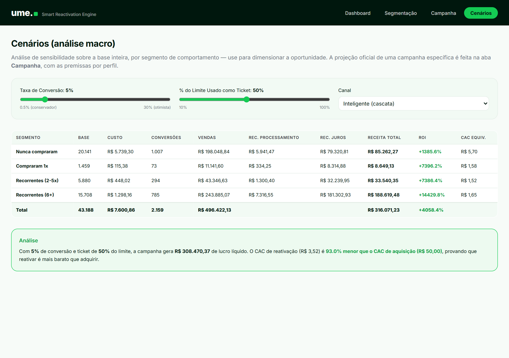

ume
Smart Reactivation Engine
Manual do Usuário
Guia completo para montar campanhas de reativação de clientes com retorno comprovado — sem depender de time técnico.
Case Product Builder · Julho 2026 · Versão 1.0
O que é esta ferramenta?
A Ume tem 200.592 clientes cadastrados, mas a grande maioria nunca voltou a comprar. Existem R$ 19,8 milhões em limite de crédito aprovado que ninguém está usando — dinheiro parado que poderia virar vendas nos varejos parceiros e receita para a Ume.
O Smart Reactivation Engine resolve isso. Ele responde três perguntas que hoje são decididas "no achismo":
- QUEM vale a pena chamar de volta? (nem todo cliente vale o custo da mensagem)
- POR QUAL CANAL? (Push é grátis, SMS custa R$ 0,03, WhatsApp custa R$ 0,30)
- VALEU A PENA? (cada campanha mede o próprio resultado, com prova)
A ideia central em uma frase: trazer de volta um cliente que já foi aprovado custa centavos; conquistar um cliente novo custa R$ 50. Esta ferramenta explora essa diferença de forma organizada e mensurável.
Conceitos que você vai encontrar (glossário rápido)
| Termo | O que significa |
|---|
| Adimplente | Cliente aprovado e sem dívida em atraso — o único tipo que entra em campanhas |
| Dormência | Há quantos dias o cliente não compra |
| Segmento | Um grupo de clientes filtrado por características (ex.: "score alto que nunca comprou") |
| Grupo de controle | Uma parte do público que NÃO recebe a mensagem, de propósito — serve para comparar e provar que a campanha (e não o acaso) gerou as vendas |
| ROI | Retorno sobre o investimento: quanto a campanha devolve para cada real gasto |
| Guardrail | Proteção automática que impede erros caros (estourar orçamento, cansar a base com mensagens demais) |
As 4 telas do app
| Tela | Para que serve |
|---|
| 1. Dashboard | Entender a base: quantos clientes, quanto limite parado, como se comportam |
| 2. Segmentação | Escolher QUEM vai receber a campanha |
| 3. Campanha | Montar a campanha: canal, proteções, projeção de retorno e exportação |
| 4. Cenários | Simular "e se?" — testar diferentes taxas de conversão e ver o impacto no resultado |
Tela 1 — Dashboard: conheça a base
É a primeira tela ao abrir o app. Ela existe para você entender o tamanho da oportunidade antes de agir.

Dashboard completo: faixa de destaque, exclusões, cartões de comportamento, insight e gráficos.
Como ler o Dashboard (de cima para baixo)
1
Faixa verde-escura: o número mais importante — R$ 19,8 milhões em limite aprovado que ninguém está usando, espalhado por 43.188 clientes.
2
Aviso de exclusões: explica quem ficou de fora das campanhas e por quê (151.855 clientes com crédito negado e 5.549 inadimplentes). Transparência: você sempre sabe sobre quem a ferramenta está falando.
3
Cartões: o comportamento da base. Destaque: 20.141 clientes (46,6%) foram aprovados e nunca compraram nada — o maior grupo de oportunidade.
4
Insight-chave: não existe cliente "ativo" na base — o mais recente comprou há quase 3 meses. Ou seja: todo mundo é elegível para reativação.
5
Gráficos: distribuição de dormência (quanto tempo sem comprar) e de score de crédito.
6
Botão "Começar a segmentar": no fim da página, leva você para o próximo passo.
Tela 2 — Segmentação: escolha quem chamar de volta
Aqui você define o público da campanha. Pode começar por um segmento sugerido (um clique) ou montar seus próprios filtros.

Segmento sugerido "Nunca compraram, score alto" aplicado: 13.418 clientes selecionados.
Passo a passo da segmentação
1
Clique em um segmento sugerido (ou preencha os filtros manualmente: compras, score, limite, dormência, idade, app, sexo). Os cartões abaixo atualizam na hora mostrando quantos clientes entraram no filtro e o perfil deles.
2
Confira os cartões de resumo: quantidade de clientes, limite disponível médio, score médio e % com app. Eles dizem se o grupo vale uma campanha.
3
Clique em "Salvar Segmento", dê um nome fácil de reconhecer (ex.: "Nunca compraram score 700+") e confirme. O segmento aparece na lista "Segmentos Salvos" e fica guardado mesmo se você fechar o navegador.
4
Após salvar, aparece o botão "Montar campanha com este segmento →" — clique para ir direto ao próximo passo.
Os 4 segmentos sugeridos e a lógica de cada um:
• Nunca compraram, score alto — aprovados confiáveis que nunca usaram o crédito: maior grupo, menor risco.
• Uma compra, dormência curta — experimentaram há pouco tempo e ainda estão "mornos".
• Recorrentes de alto valor — já tinham hábito de compra e têm limite sobrando.
• Tem app, nunca comprou — alcançáveis por push, que é grátis: campanha de custo zero.
Tela 3 — Campanha: monte, proteja e projete
O coração da ferramenta. Em 5 passos numerados na própria tela, você monta uma campanha completa com projeção de retorno antes de gastar um real.

Campanha montada: 12.060 clientes no tratamento, 1.358 no controle, ROI projetado de +198%.
Passo a passo da campanha
1
Selecione os segmentos — marque um ou mais segmentos salvos. Se dois segmentos tiverem clientes em comum, a ferramenta remove as duplicidades sozinha.
2
Estratégia de canal — deixe em "Inteligente" (recomendado): quem tem app recebe push (grátis); quem tem muito limite recebe WhatsApp (mais caro, mas mais aberto); o resto recebe SMS (barato). Ou force um canal único se quiser testar.
3
Experimento e guardrails — as proteções da campanha:
• Grupo de controle (%): parte do público que NÃO recebe mensagem (padrão 10%). É o que permite provar depois que a campanha funcionou.
• Orçamento máximo: se o custo passar do teto, a ferramenta avisa em amarelo.
• Kill (conversão mínima e janela): a regra de desistência — ex.: "pausar se menos de 1% comprar em 7 dias". Evita insistir em campanha que não funciona.
4
Premissas do modelo — clique em "Editar" para ver e ajustar as taxas de conversão estimadas. Elas são hipóteses declaradas (não dados medidos) e serão substituídas pelos resultados reais da primeira campanha.
5
Projeção da Campanha — os cartões mostram: quantos recebem a mensagem, quanto custa, quanto deve voltar de receita (taxa de processamento + juros) e o ROI projetado. Verde = campanha viável; vermelho = repense o público ou o canal.
Depois de conferir a projeção
- Registrar Campanha: dê um nome e registre. Ela entra na tabela "Campanhas Registradas" com data, tamanhos dos grupos, custo, ROI projetado e critério de parada. A partir daí, se você tentar montar outra campanha com os mesmos clientes em menos de 30 dias, a ferramenta avisa em amarelo (proteção anti-fadiga: cliente bombardeado bloqueia o canal).
- Exportar Lista (.csv): baixa a lista final de clientes com o canal recomendado de cada um e a coluna grupo (tratamento ou controle) — pronta para o time de disparo usar.
Importante: os clientes do grupo "controle" NÃO devem receber mensagem. Eles são a régua de comparação — é comparando as compras dos dois grupos após 30 dias que se calcula o efeito real (e o ROI verdadeiro) da campanha.
Painel de premissas
Clique em "Editar" na seção 4 para abrir as taxas assumidas pelo modelo. Nada é caixa-preta: você vê, questiona e ajusta cada número.

Painel de premissas aberto: todas as taxas assumidas são visíveis e editáveis.
Tela 4 — Cenários: brinque com o "e se?"
Esta tela é um laboratório de hipóteses sobre a base inteira, dividida por comportamento (nunca compraram / 1 compra / recorrentes). Use antes de decidir onde apostar.

Simulador: ajuste conversão, ticket e canal — a tabela recalcula tudo na hora.
Como usar
1
Arraste o controle de Taxa de Conversão (de 0,5% pessimista a 30% otimista).
2
Ajuste o % do limite usado como ticket (quanto do limite disponível o cliente gastaria).
3
Escolha o canal e veja na tabela: custo, conversões, receita e ROI por segmento.
4
Leia a Análise no rodapé: ela compara o custo de reativar um cliente com o custo de adquirir um novo (R$ 50) — o argumento central da ferramenta.
Diferença entre Cenários e Campanha: Cenários é análise macro (base inteira, uma taxa única que você escolhe). Campanha é a projeção oficial de um público específico, com premissas por perfil de cliente. Use Cenários para explorar; use Campanha para decidir.